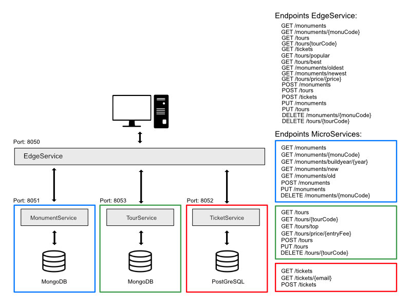
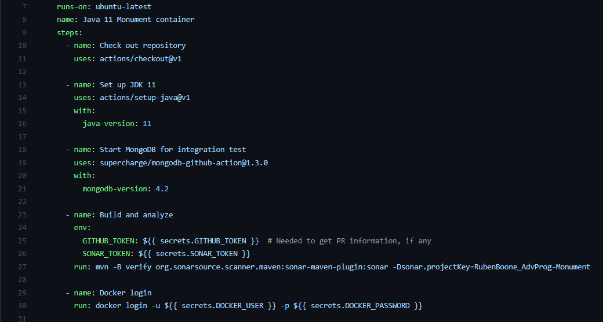
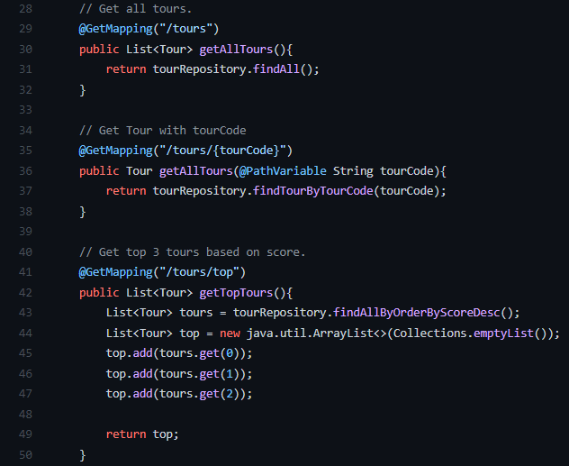
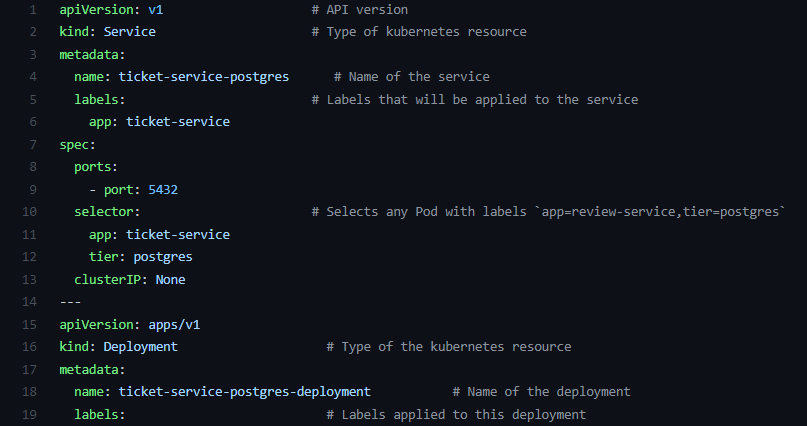

This group project is made for the course Advanced Programming Topics. In this course unit, we learned to create Docker images application, using tools like SonarCloud and Selenium and the power of GitHub actions. We were allowed to choose the theme ourselves. We chose to make something about tours of all kinds of monuments around the world. As an extra, we made a simple web application in Angular to show our microservice API.
This group project is made for the course Advanced Programming Topics. Create in a group of 2 students a microservices project. We had to at least have 2 microservices and an edge service. The application needs to use MongoDB and another non-MySQL Database. Each of the microservices had minimum number of GET, POST, PUT and DELETE calls. We also had to foresee unit and integration tests. At last, we had to implement a CI/CD deployment that runs the tests, upload a .JAR as an artifact and send a docker image to Docker hub and use SonarCloud.

I wrote a Dockerfile for each microservice we made and the pipeline that gets executed by GitHub actions. The Dockerfile pulled an image and made it ready for our application. The CI/CD file was set to run on push, to make use of Ubuntu. It also told the image what it needs to use and install, what the SonarCloud token is (using GitHub secrets) and finally push the image to Docker hub.

This part of the project was simply making a web API using Spring Boot. Because we choose to make 3 microservices I helped writing a bit of the API endpoints. The code exists out of a controller containing all the endpoints, a model that defines the properties of the subject of the microservice and a repository to do calls to the database image.

The useful part of making microservices is that if one part of the API gets a lot of request, you can simply start another image with Kubernetes and the traffic gets divided between the images. This is set up by a directory named k8s. This directory contains all the config files for each microservice.

Making Docker images and microservices is really useful. That way, you can scale your application very easily. With Docker, you can run your application on all the machines without the need of installing all kinds of packages. At first this course scared me because of the words Docker and Kubernetes, but once you understand how everything works it is not that hard anymore. In this project I got the chance to increase my experience with Docker, Kubernetes and I learned that GitHub is not just a version control tool.